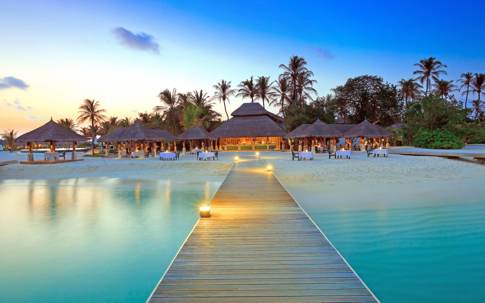
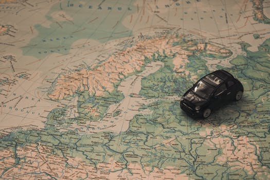

1 / 3

jammu:Udaipur
2 / 3

Hawamahal
3 / 3
Bikaner
TOUR THE WORLD WITH US
This land is a colourful melange of massive forts, stunning palaces, diverse cultures, delectable cuisines and warm people, set amidst a rugged yet inviting landscape. It is a land that has inspired me and countless others. Come tread on the sands of time. In Rajasthan you will find every hue in Nature's grand palette - the red sands, the blue of royalty, the pink cities or the amber sunsets. Surrender yourself to the sounds of trinkets or the sounds of the all conquering wind. Sight and sounds that are far removed from any city. Sights and sounds that will transport you into a folk lore. Music, art and dance is woven into every inch of this land I call paradise. You will find it carved in every grain of sand. Here you will find the past, the present and the future. You will find passion. You will find adventure. And you will find yourself.
Tour map

| Our classic tour to state of culture |
|---|
| Day 01: Arrival In jaipur drive to Jaipur by car - coach. Check - in and lunch at Hotel. Tour of Jaipur, visiting Maharaja's Palace, Hawa Mahal, Chandra Mahal, Mubarak Mahal palaces, Royal Observatory and Albert Museum. Afternoon, excursion to Amber Fort where ascent to the fort is on elephant's back, Jantar Mantar monument of Jaipur built by the Rajput king Sawai Jai Singh. Dinner and overnight at hotel.. |
| Day 02: Jaisalmer After Breakfast proceed for city sightseeing tour, Golden Fort, Havelis etc. Evening visit to famous Sam Sand Dunes is a must visit in city of Jaisalmer. It is likely that you are going for a Desert Safari when planning to visit Thar Desert or else, the point of going there is useless, making the Sam Sand Dunes an increasing major tourist attraction of the city with Camel safari & Rajasthani Folk Dance & music. |
| Day 03: Jodhpur - Jaisalmer Morning after breakfast drive to Jaisalmer. Arrive Jaisalmer & check-in hotel. Visit to Jaisalmer Fort is one of the largest fully preserved fortified cities in the world. It is situated in the city of Jaisalmer. Famous Gardisar lake & main market, Kuldhara Abandoned Village is Established around 13th century, it was once a prosperous village inhabited by Paliwal Brahmins. Gradually, it acquired reputation as a haunted site. |
| Day 04: Chittorgarh - Udaipur :: This morning after breakfast you will drive to Udaipur. En route to Udaipur we visit the celebrated temples of Eklingji, which was built for the tutelary deity of the Maharanas of Mewar, of sandstone and marble in 734 AD. Its 108 temples are enclosed by high walls and has a pyramidal roof composed of hundreds of knobs. Later, visit Nagda, one of the ancient palaces of Mewar dating back to the 6th century AD. The Sasbahu Temples are among the most exquisitely carved temples. Check in to the hotel on arrival at Udaipur. Rest of the Day is at leisure. By the sunset we take boat ride over Lake Pichola experience of which is beyond any comparison.Overnight saty in Hotel. |
| Day 05: Udaipur Breakfast at Hotel. Visit Vintage Car Collection, the guided tour of City Palace, then visit Durbar Hall, Crystal Gallery. Lunch at Restaurant.walk up to the Clock tower visit Sheetal Nath Jain Temple and Jagdish Temple. Lake boat ride to Jag Mandir Island. Shopping or visit to Bagore-ki-Haveli. Dharaohar cultural show. Walk from Gangaur Ghat along Pipli Ghat and over footbridge. Overnight Overnight Udaipur. Tourist Places: Lake Palace, City Palace, Jag Mandir, Saheliyon- ki-Bari, Fateh Sagar |
| Day 06: AGRA A comfortable drive will convey you to Udaipur. In between a stoppage at Fatehpur Sikari is scheduled which is the erstwhile capital of Mughal Empire after Akbar decided to shift his capital from Agra. Buland Darwaza is a world famous site here because of it being the largest gateway. Resuming the drive towards Jaipurthe pink city, we will shift to a hotel as soon as we reach here. Overnight stay at Jaipur.Enquire About This Trip. |


